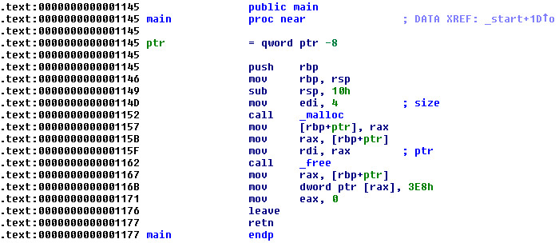
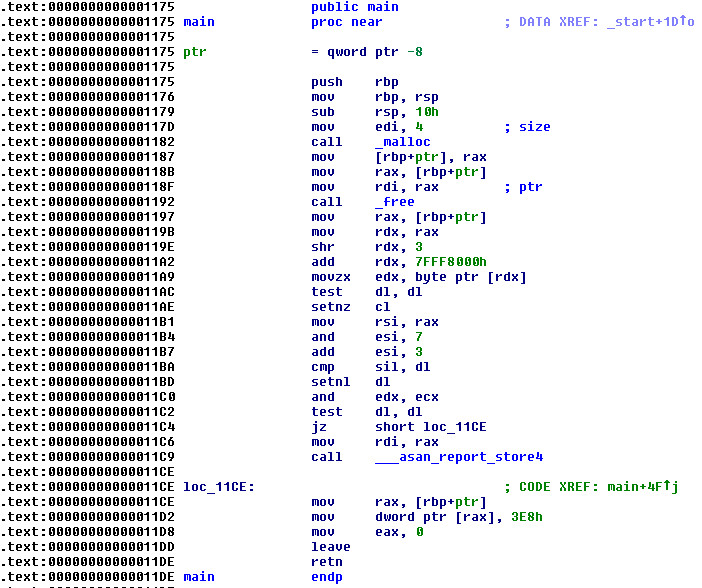

Steward
分享是一種喜悅、更是一種幸福
程式語言 - GNU - CFLAGS -fsanitize=address
參考資訊：
https://hanpfei.github.io/2019/05/19/AddressSanitizer_on_linux/
https://stackoverflow.com/questions/37970758/how-to-use-addresssanitizer-with-gcc
main.c
#include <stdio.h>
#include <stdlib.h>
#include <malloc.h>
int main(void)
{
int *p = malloc(sizeof(int));
free(p);
*p = 1000;
return 0;
}
編譯、執行(沒有fsanitize)
$ gcc main.c -o main -ggdb $ ./main
編譯、執行(使用fsanitize)
$ gcc main.c -o main -fsanitize=address -ggdb
$ ./main
=================================================================
==31640==ERROR: AddressSanitizer: heap-use-after-free on address 0x602000000010 at pc 0x56107942f1ce bp 0x7ffe55b42ba0 sp 0x7ffe55b42b98
WRITE of size 4 at 0x602000000010 thread T0
#0 0x56107942f1cd in main /home/steward/Downloads/main.c:10
#1 0x7f10e314509a in __libc_start_main ../csu/libc-start.c:308
#2 0x56107942f0b9 in _start (/home/steward/Downloads/main+0x10b9)
0x602000000010 is located 0 bytes inside of 4-byte region [0x602000000010,0x602000000014)
freed by thread T0 here:
#0 0x7f10e33c9fb0 in __interceptor_free (/lib/x86_64-linux-gnu/libasan.so.5+0xe8fb0)
#1 0x56107942f196 in main /home/steward/Downloads/main.c:8
#2 0x7f10e314509a in __libc_start_main ../csu/libc-start.c:308
previously allocated by thread T0 here:
#0 0x7f10e33ca330 in __interceptor_malloc (/lib/x86_64-linux-gnu/libasan.so.5+0xe9330)
#1 0x56107942f186 in main /home/steward/Downloads/main.c:7
#2 0x7f10e314509a in __libc_start_main ../csu/libc-start.c:308
SUMMARY: AddressSanitizer: heap-use-after-free /home/steward/Downloads/main.c:10 in main
Shadow bytes around the buggy address:
0x0c047fff7fb0: 00 00 00 00 00 00 00 00 00 00 00 00 00 00 00 00
0x0c047fff7fc0: 00 00 00 00 00 00 00 00 00 00 00 00 00 00 00 00
0x0c047fff7fd0: 00 00 00 00 00 00 00 00 00 00 00 00 00 00 00 00
0x0c047fff7fe0: 00 00 00 00 00 00 00 00 00 00 00 00 00 00 00 00
0x0c047fff7ff0: 00 00 00 00 00 00 00 00 00 00 00 00 00 00 00 00
=>0x0c047fff8000: fa fa[fd]fa fa fa fa fa fa fa fa fa fa fa fa fa
0x0c047fff8010: fa fa fa fa fa fa fa fa fa fa fa fa fa fa fa fa
0x0c047fff8020: fa fa fa fa fa fa fa fa fa fa fa fa fa fa fa fa
0x0c047fff8030: fa fa fa fa fa fa fa fa fa fa fa fa fa fa fa fa
0x0c047fff8040: fa fa fa fa fa fa fa fa fa fa fa fa fa fa fa fa
0x0c047fff8050: fa fa fa fa fa fa fa fa fa fa fa fa fa fa fa fa
Shadow byte legend (one shadow byte represents 8 application bytes):
Addressable: 00
Partially addressable: 01 02 03 04 05 06 07
Heap left redzone: fa
Freed heap region: fd
Stack left redzone: f1
Stack mid redzone: f2
Stack right redzone: f3
Stack after return: f5
Stack use after scope: f8
Global redzone: f9
Global init order: f6
Poisoned by user: f7
Container overflow: fc
Array cookie: ac
Intra object redzone: bb
ASan internal: fe
Left alloca redzone: ca
Right alloca redzone: cb
==31640==ABORTING
沒有fsanitize

使用fsanitize
